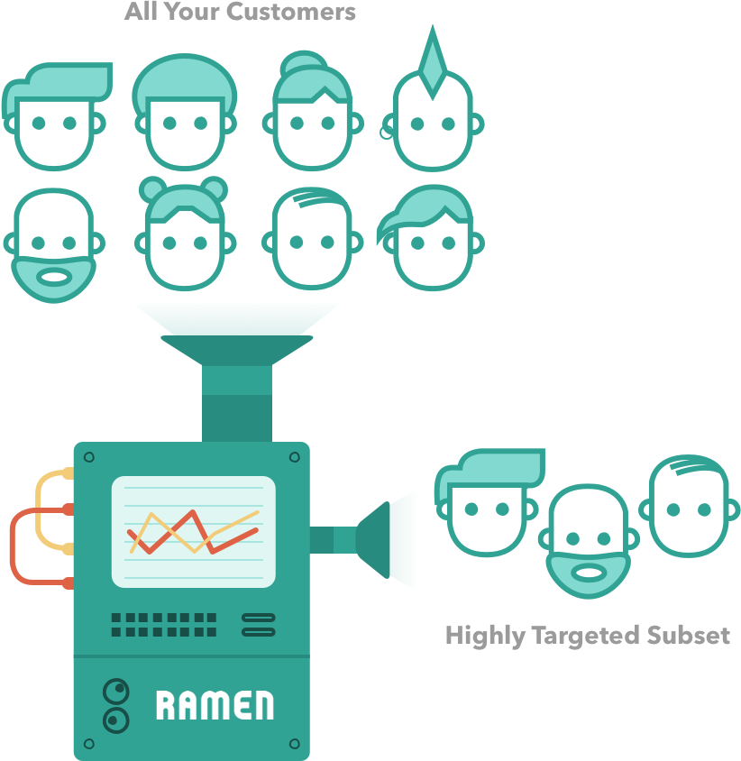
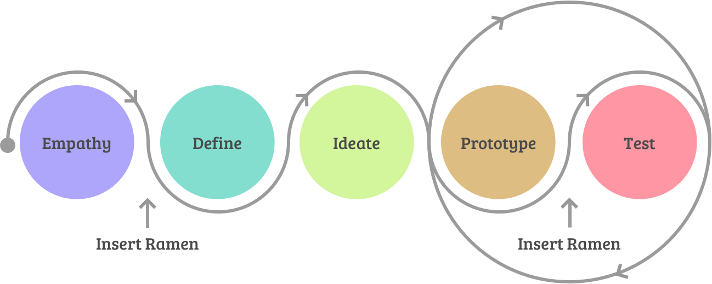

In-App Targeted Feedback Tool for
Product Development
Product and Visual Design

Product and Visual Design
Have you ever wanted to get custom feedback directly from people using your website? Ramen is a platform that allows product managers to do exactly that; collect and segment user feedback in the right place at the right time.
With Ramen the goal was to design an engaging yet subtle customer feedback product that would help save product managers time and money by helping them ensure they are meeting customer needs and building the right things.
Product managers have a hard time collecting qualitative and quantitative feedback from their user base which helps them make critical decisions. They often rely on labor intensive direct engagements or poorly targeted passive feedback via email.
Additionally, collecting feedback at scale and segmenting feedback to be useful is a technical, time intensive practice that will make your head spin. Ramen enables them to collaborate with their users more effectively.
Chat tool solutions require additional resources to manage and email surveys won’t catch the user at the ideal moment to collect feedback.
Product managers, researchers, introverts, or those simply looking for direct feedback from their customers love Ramen. They care about collecting and measuring feedback to guide and validate their decisions. This may be someone running an online store, a SaaS product, an online game, or anyone whose audience is online but may be hard to engage with directly.
My role was focused around the product design, marketing and front-end development while my partner focused on the big picture items and back-end infrastructure. I built most of the front-end using Ruby and html markup. Our small startup team focused on user flows, customer needs and how to differentiate the product from the competition.
Originally Ramen was built as a fundraising platform for SaaS products, but we discovered that the collaboration and client feedback tools were more valuable. We pivoted the product to focus on ways to collaborate with beta users as well as capture feedback.
I designed a light weight widget that engaged users on specific pages or when they did specific actions like click a button. It allowed a Ramen user to craft a question to ask and collect feedback from their users. You could even ask questions to specific audiences in your app based on data provided to us.
This product was built using the “human centric design process” and actually fits in quite well to the same process when used correctly. What was unique about the product is that we actually used Ramen to build Ramen. In other words, we used our own feedback tool to collect feedback on the tool. (don’t let that make your head spin.)
Some of the feedback lead us to add features like open ended questions, multiple choice questions and advanced Net Promoter Score that could be segmented by user base. We even designed a Customer Relationship Management (CRM) into the product so all the information you need about your clients was at your fingertips.
These additional combinations give a project manager insight into how different audiences of their product felt about it. For example how a paid user liked a feature vs a free user.
As a result, companies like segment.com, mention.com, hosting.com, ustream.com, victorops.com, receipt-bank.com and other SaaS services chose Ramen as a way to connect with their customers and gather feedback. We even had the backing of some great names in startups including Jason Calacanis, Naval Ravikant of AngelList and Foundry Group.
It was incredibly powerful because it gave product developers the ability to engage their user base and collect feedback at scale. And with the addition of user feedback segmenting it created a tool that would almost make your decisions for you. It ran hundreds of thousands of surveys across major websites and helped determine the road maps for many early-state software companies.
We are a current Ramen user and love the product. Our goal is to have a user centric development process. Leveraging Ramen for our product roadmap and customer feedback gives us insights into the needs and priorities of our customers. Super valuable.” James Clark, CEO of SocialEngine
Some fun stats about the project:
My time at Ramen taught me about what it takes to build a SaaS product and I even co-wrote a short ebook about “Product Success”. It was a time where I learned more about myself and how to have a voice when coming up with ideas and working with people.
Thanks for reading! If you want to collaborate, talk about product design, or just want to say hello, hit me up at matth@anothercolor.com or connect via LinkedIn.
I am available for HIRE. :)